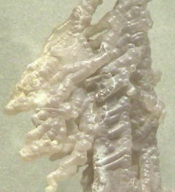
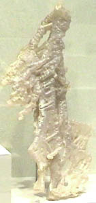
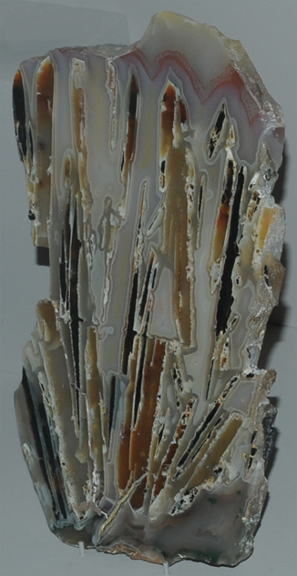
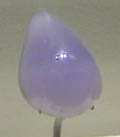
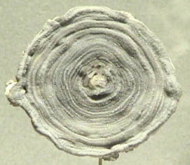
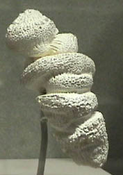
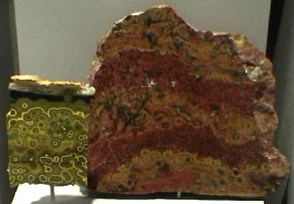
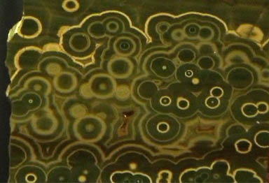

Chalcedony Quartz
|
Quartz is silicon dioxide, SiO2. Quartz is abundant in the Earth's crust, being the chemically simplest form of the silicates. All the samples here are displayed in the Smithsonian Museum of Natural History. One of the names applied to quartz is chalcedony. It is not a specific name and has been used for a variety of types of quartz. It is used here following the usage at Smithsonian to describe those types of quartz which were formed in an apparent tubular formation, like multiple flows or stalactite forms. The sample at right is about 10x35 cm and is from Namibia.

|  |
|
 | The specimen of chalcedony at left is about 13x25 cm and is from Palmeiras, Brazil. The specimen below is about 1.2x1.5 cm and is from Africa.

A comment on the U. S. Geological Survey site is "Chalcedony is a catch all term that includes many well known varieties of cryptocrystalline quartz gemstones."
|
| 
This specimen of chalcedony is about 9x9 cm and is from Brazil.
|  This specimen of chalcedony is about 8x20 cm and is from Owyhee River, Malheur County, Oregon. |

The specimen at left above is about 8x12 cm and is from Madagascar. More detail below. The speciment at right above is about 18x20 cm and is from Morgan Hill, California.

|
Index |